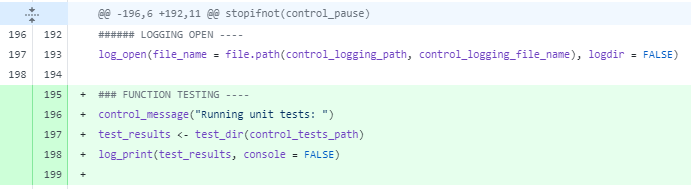

A case for using GitHub
Why you should be using GitHub
A(nother) case for using GitHub for data analysis projects, from the perspective of an NHS England data analyst. My team started to transition projects on to GitHub last year, and this is why I’m glad we did.
Use a service like GitHub to share what you’ve done and how you’ve done it, so that you, your colleagues and others can repeat the process. Share your code and documentation, not the data or even the results (as they of course may be sensitive).
What is GitHub, anyway?
GitHub is a suite of products centered around the version control system Git. It offers:
A place to store and share projects, in repositories with complete control over who has access. It’s easy to download a copy of a project, make changes and upload a revision. It’s a shared source-of-truth on the cloud.
A record of changes made to the repository, including who made them and when; great for recovery, audits or just understanding how the project changed over time. You name and describe changes so that it’s easy to understand what’s been done.
Multiple branches of one project being worked on in parallel. You can work safely and separately on features and combine them. By having a distinct final/publishing branch (usually
main), you can protect the quality and completeness of the output product.Peer review in your regular workflow. Pull Requests and Code Reviews are key features. When you’re happy with a change you’ve made in a branch, you can make a request for your work to be pulled/merged into the
mainbranch. This can then be reviewed by someone, who can add comments, request changes or approve and merge. This is really valuable, because it adds a natural step for feedback and quality assurance into the process.
All of that is available for FREE, and that’s not everything1, but hopefully it is enough to pique your interest.
That sounds like a lot of extra steps just to save my work…
Well, yes, it is. It’s saving, but more deliberate, with more quality assurance built-in, records for recovery and audit, proper support for multiple branches of work. It is a longer process; it’s a more thoughtful process; it’s a better process. In fact, it’s not a longer process, it takes more time up front but saves a lot over the mid-to-long-term. I don’t think I can stress enough how beneficial the extra steps are, particularly in making your work reproducible.
GitHub for Reproducible Analytical Pipelines (RAP)
As a summary of why reproducible pipelines are important: the more manual steps like copy-pasting in a process there are, the more time it will take to complete, the more risk there will be for error, and the less scalable it will be for extending and repeating the process. It’s good to automate as much as possible, and products like GitHub go hand-in-hand with tackling these issues:
From the NHS Digital levels of RAP framework, which sets out a list of requirements for making a good pipeline, look at the baseline (bronze) points:
Code is version controlled (see Git basics and using Git collaboratively guides).
Code has been peer reviewed.
Code is published in the open and linked to & from accompanying publication (if relevant).
Data produced by code in an open-source language (e.g., Python, R, SQL).
Repository includes a README.md file (or equivalent) that clearly details steps a user must follow to reproduce the code.
GitHub directly implements or supports all of these. As you should know by now, it implements version control, peer review and publishing code publicly. It supports working with a broad variety of languages as well as encouraging READMEs by default, presenting them as guides on repository home pages.
That’s great in theory, but what it’s like in practice?
Like I said, I’m really glad the team I’m in started making this move -
Now we can collaborate much more safely, in ways that were not possible with our previous setup using OneDrive/SharePoint. It’s easy to work on something in your own branch without worrying about messing the real thing up, and then it shows you the exact differences when you want to combine on them.
Introducing code review has been a boon for learning in the team. We’re not just getting things done well enough to work. We’re getting feedback, we’re improving, we’re making things more maintainable. This comes from both getting your code reviewed and from doing the reviewing.
Code review has managed to catch a few mistakes before they got moved into building a project.
In a case where a change didn’t work in practice, we were able to revert it.
It has been quick and easy to get code running for different people and on different locations like remote desktops.
That being said, although the differences are clearly set out, conflicts can arise and resolving them scales in difficulty with the complexity of the changes. So, it’s still generally recommended to have only one branch work on one file at a time.
Getting to grips with the tools
There was a bit of learning and setting up to do to get started, but plenty of guides on how to do it. There are lots of tools to potentially use, the most friendly being apps like GitHub Desktop, or perhaps the integrated functionality in development environments like VSCode. Best is to just pick one that seems comfortable to you, find the relevant documentation and guidance, and then run with it.
Once you get the hang of if it, there is a fairly simple and consistent rhythm of creating feature branches, making/saving/committing changes to files, pulling from the main branch and pushing to the feature branch, before submitting for review.
It’s easy to see where changes have been made
When a commit is made the exact changes are recorded, which can be displayed in various ways, usually with a + for added lines and - for removed lines. Being so explicit with the changes is the main reason why merging different changes together is made so easy, because you know exactly what is happening.

The drive and support in government and the NHS
The Goldacre review goes in to quite some (non-technical) detail on why reproducible pipelines are a great opportunity for improvement in NHS analytical work. It recommends the adoption of RAP practices as the default:
it is crucial that the core working practices, such as sharing code, are implemented as a norm throughout the system, because of the problems that closed working can create around quality, safety, usability, credibility, and review.
The review stresses the importance of tools and services like GitHub2 to meet the minimum requirements of data pipelines being shared openly to anyone for review and re-use with an audit trail using version control.
The same is said in many places, here are some others in additions to the the NHS Digital resources already shared:
The GOV.UK Service Manual advises making code publicly available in an open internet source code repository.
The Government Analysis Function’s best practice guidance includes a Guide to Version Control with Git and a Peer Review Guide.
The Office of National Statistics reiterates the NHS Digital position.
GitHub and the NHS so far
The Open Source Healthcare Statistics page shows how many public repositories there are from various healthcare organisations. It’s been growing quickly in recent years! They give links to all the repositories, if you’re interested in a browse (including NHS Digital and NHS England). Of particular note, I think, among that list are the communities building around Open Source for healthcare professionals like the NHS R Community and the NHS Python Community3.
So, do you see the benefits of Open Code?
💡 You did notice you’re at a github.io address, right?↩︎
🔍 GitHub is mentioned 39 times in the review.↩︎
That was a lot of links. Are you clicking any of them? Go check them out - they’re great! Go for it! Seriously, stop reading what I’m writing. I’m getting self-conscious now. Or you can go to the next page, I guess 🤷♂↩︎